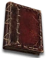
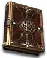
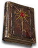
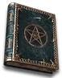
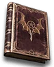

Heyday

The Black Oath Ledger
Forgotten Volume
Defense: 95-139
Chance to Block: 3%
Required Level: 70
+2-3 to Warlock Skill Levels
+3-4 to Abyss (class only)
+3-4 to Enhanced Entropy (class only)
-10 to -20% to Enemy Magic Resistance
+25-35% to All Resistances
+150-200% Enhanced Defense
Unique Warlock Grimoire
The Black Oath Ledger
- Type
- Warlock Grimoire
- Base
- Forgotten Volume
- Tier
- Elite
- Required level
- 70
- Item level
- 60
- Required strength
- 77
- Max sockets
- 3
- Class
- Warlock only
Other unique Warlock Grimoires

Ars Al'Diaboloslevel 80- Ars Tor'Baaloslevel 73
- Ars Dul'Mephistoslevel 78

Measured Wrathlevel 52- The Ossuary Almanaclevel 5
- Book of the Swift Apostlelevel 10
 The Branded Tomelevel 11
The Branded Tomelevel 11- Tome of the Horazon Warriorlevel 14

The Vizjerei Codexlevel 15- The Arreat Codexlevel 25

Compendium of Gheedlevel 17- Compendium of Piercing Oathslevel 24